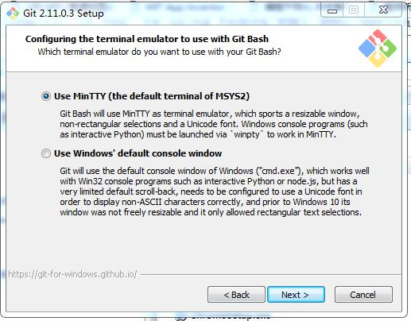
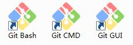
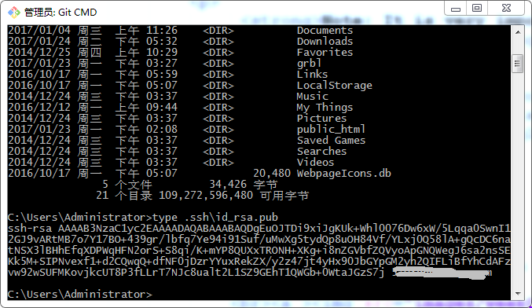
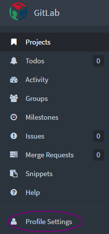
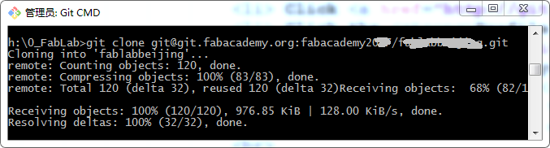

First of all ,thanks our Gurus Ted for giving me more help on
how to use git and Gitlab.
Note: It is very important to read through all the doucuments provided
by the FabAcademy. Some of them are listed below.
Those doucuments are:
Git-Book
GitLab Doucument
Fab Academy 2016 Archive Instructions
Step 1: Download and install Git
Download Git for Windows : Click here to download
Install Git for Windows.

Git setup completed,three icons will add to you destop.

Here I use Git CMD console shell, Git Bash is the same function withe Git CMD,the difference is the command
Step 2: To Generate SSH key
Sign in on git.fabacademy.org with our fablabs.io ID.
Double click the Git CMD icon to launch Git CMD to generate SSH key. An SSH key allows
you to establish a secure connection between your computer and GitLab.
Type the following command it Git CMD shell.
type ~\ssh\id_rsa.pub

If you see a long string starting with ssh-rsa, you can skip the next ssh-keygen step.
To generate a new SSH key,use the following command in Git CMD shell:
ssh-keygen -t rsa -C "$your_email"
This command will prompt you for a location and filename to store the key pair and for a password.
When prompted for the location and filename, just press enter to use the default.
If you use a different name, the key will not be used automatically.
Use the command below to show your public key in Git CMD shell:
type ~\ssh\id_rsa.pub
Use the command below to copy the key to the clipboard.
clip < ~\ssh\id_rsa.pub
Step 3: Setting up your SSH Keys on Gitlab
Click git.fabacademy.org to enter GitLab for fabacademy.
Click the Profile Setting item which is located on the left side of the windows.

Click the SSH Keys item which is located on the left side of the windows.
In the text-field named "Key",right click you mouse and select paste
the SSH Keys was copy to the text-field, wait for a moment,you emial was appeared under the Title box.
Setting up your SSH Keys on Gitlab sucessfully.
Step 4: Clone you Website to Gitlab
To Select and enter the folder to store the repository page.
Use the command below in Git CMD shell to clone your repository :
git clone git@git.fabacademy.org:fabacademy< year&rt /< reponame&rt .git

You will find a new folder which name is the same as your Fablab group name, the folder
is the clone of the Gitlab repo.
Use the command below in Git CMD shell to enter the local repository :
cd "your lab group name"
In the local repo, there is as subdirectory named students , inside the
students folder, you can find a folder named for each student_id. Copy your web files to
your own student_id folder. You can use windows explorer to copy your web files.
Use the command below in Git CMD shell to push your web files to Gitlab repository :
cd "your lab group name"
git config --global user.email "your email"
git config --global user.name "your name"
git add .
git commit -m "upload my web files"
git push origin master
 Sucessfully!!! You can go to The Fab Academy to visit your own repo
Sucessfully!!! You can go to The Fab Academy to visit your own repo